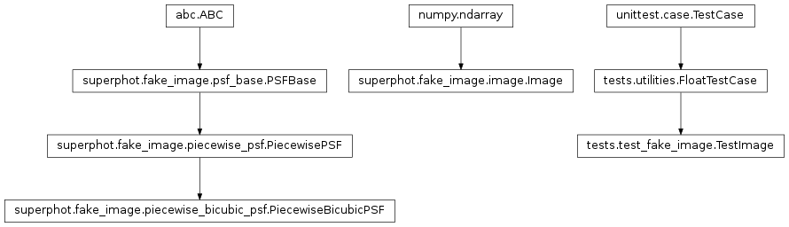
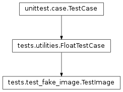

tests.test_fake_image module¶
Class Inheritance Diagram¶
Unittest test case for the superphot.fake_image.image.Image class.
-
class
tests.test_fake_image.TestImage(methodName='runTest')[source]¶ Bases:
tests.utilities.FloatTestCaseMake sure the Image class functions as expected.